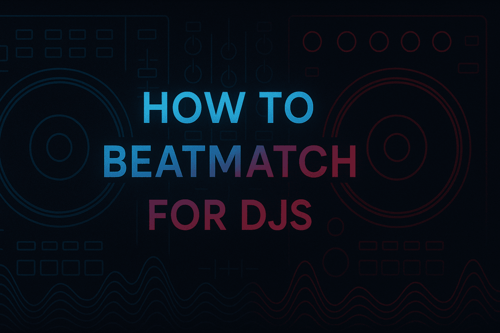
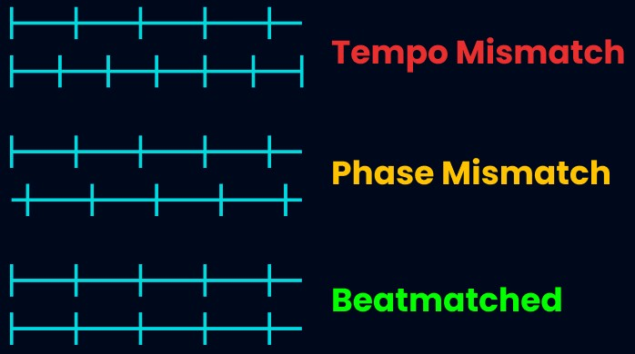
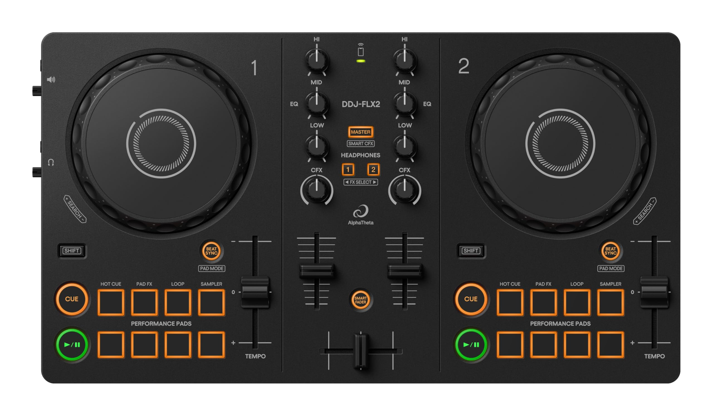
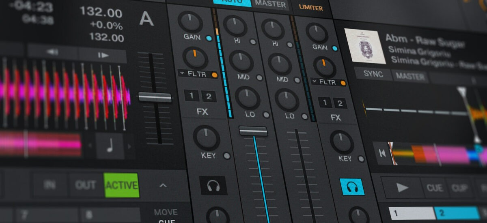
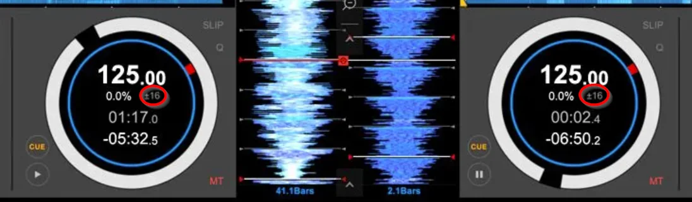
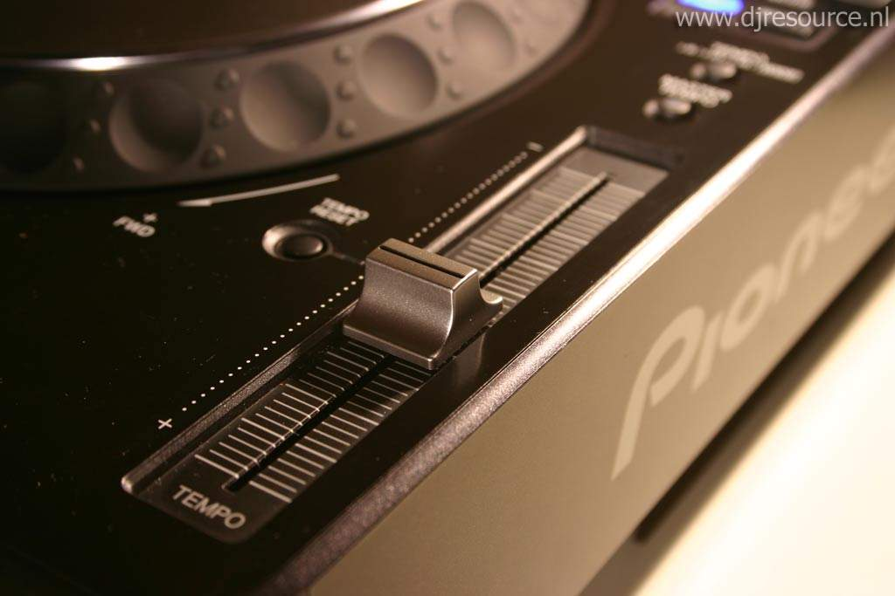
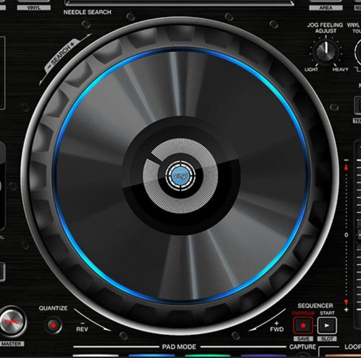
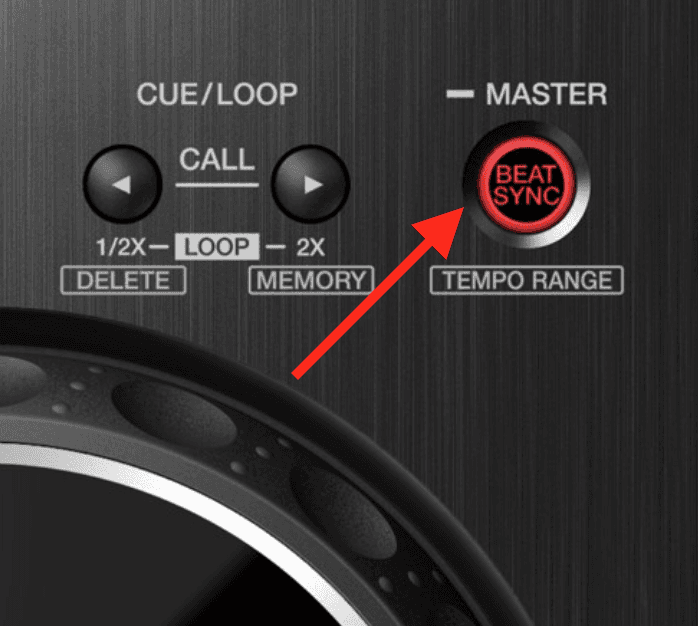
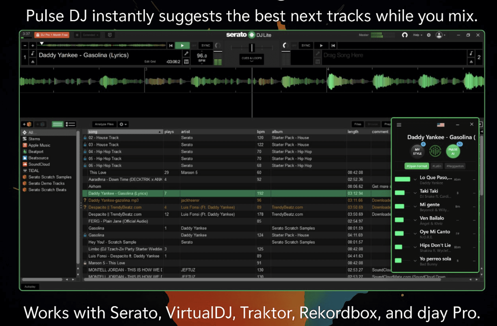

Basics

As a DJ, learning to beatmatch is the core technique that separates a playlist from a performance.
I remember in my early days of DJing, I wouldn't even bother to beatmatch when mixing, it was a total mess. Learning to beatmatch means you can create perfectly smooth, seamless transitions. I would say that it's one of the most essential DJing skills, second only to track selection.
In this guide I'm going to give you all the information and practice routines you need to learn beatmatching. I'll also share tips and tech to help make beat matching easier!
Also, check out our free DJ Software PulseDJ - which gives you the ultimate track suggestions.
For more DJ tips:
- How To Mix Harmonically
- Managing Your DJ Music Library
- Using DJ Auto Mixing Tools
What You’ll Learn About Beatmatching
- What beat matching is and why it’s a fundamental DJ skill.
- A step-by-step guide to beatmatch manually using a DJ controller.
- Pro-level practice routines to make beat matching second nature.
- How PulseDJ makes finding the right track to mix next, with a similar bpm, faster than ever.
PulseDJ: Your Smart Assistant for DJ Sets

So, what is PulseDJ? It’s an AI co-pilot designed for DJs like us. You install it, launch it alongside your normal DJ software (like Virtual DJ, Serato, Rekordbox, etc.), and as you play, it gives you real-time track recommendations. It’s like having a seasoned DJ partner who has analyzed millions of DJ sets and knows what track will mix perfectly next, based on historic data, key, and BPM.What Is Beatmatching for DJs?

At its heart, beatmatching is the art of taking two tracks and matching their tempo (speed) and phase (beat alignment). The tempo is measured in BPM (beats per minute). The phase is ensuring the kick drum of the upcoming track hits at the exact same time as the kick drum of the current track.
When a DJ aligns the beats of two songs perfectly, they can blend them together to create seamless transitions. This skill is the foundation of nearly all dance music mixing, from house and techno tracks to many forms of hip hop and funk. The goal is to make different tracks sound like one track, creating a continuous flow of music.
What Equipment is Needed for Beatmatching Your DJ Equipment

To start beatmatching, you need DJ equipment that lets you play and control two audio sources independently. This could be a modern DJ controller with dj software, a pair of dj controllers like CDJs, or classic turntables for playing vinyl.
The key components you'll be using are:
- The Tempo Fader: Also called a pitch fader or tempo slider, this control lets you adjust the tempo of your track.
- The Jog Wheels: These are used to "nudge" the track forward or backward for fine tuning the alignment.
- The Cue Button: This lets you listen to the second track in your headphones without the audience hearing it, which is essential for getting the beat match right.
How to Beatmatch Manually: A Step-by-Step Guide
Here is the step-by-step process I’ve used thousands of times, from my bedroom to the club.
Step 1: Know Your Music
Before you even touch the pitch control, you have to know your music. This means understanding song structure. Most dance music is in 4/4 time, which means you can easily count beats in groups of four. Your job is to find "the one"-the first beat of a bar or phrase. This is where you'll set your cue point.
Step 2: Cue Up the Incoming Track

While your first track (the playing track) is live, load your new track (the incoming track) onto the other deck. Use your cue button to find that first beat and set your cue point right on it. I like to tap the cue button along with the playing track to feel the rhythm.
Step 3: Match the Tempo (BPM)

Now, look at the BPM counter. Let's say your track playing is at 125 BPM. Your new track might be 128 BPM. Use the tempo fader on the new track to slow it down until its BPM also reads 125. Getting them to the same bpm (or as close as possible) before you press play is half the battle.
Step 4: Drop it on the One
This is the moment of truth. When the playing track hits its "one"-the right point in the phrase-press play on the other track (the cued one). Listen only in your headphones.
Step 5: Ride the Pitch (Phasing)

Are they in time? Probably not perfectly. This is where your ears and fine tuning skills come in.
- If you hear the beats starting to separate and sound like a galloping horse (the dreaded "train wreck"), one track is faster.
- Listen closely: is the second track rushing ahead? Pull its tempo fader down just a tiny bit .
- Is the second track falling behind? Push its tempo fader up slightly.
- This is the hardest part of beat matching skills, and you'll need to constantly listen and double check that they aren't drifting.
Step 6: Nudge with the Jog Wheel

While you're getting the same tempo, you also need the beats to align right now . This is called phasing.
- If the new track's kick drum is hitting just after the main track's kick, it's behind. Give the jog wheel a tiny, quick nudge forward to speed it up momentarily.
- If it's hitting before , it's ahead. Gently drag your hand on the jog wheel to slow it down for a split second.
- Some DJ software also has a pitch bend button that does the same thing.
Your goal is to get the kick drum and snare drum (or snare drums) of both tracks to hit at the exact same beat. When you've done it right, you can listen to the other track and the current track and you won't be able to tell them apart... it will sound like the same track. Now, you're beat matched and can slowly bring in the new track to transition smoothly in your mix.
Pro Tips and Practice Routines to Master Beatmatching
Knowing the steps is one thing, but making it second nature is another. When I was first learning, I spent hours just doing drills. Here are a few tips and routines that took my beat matching skills from clumsy to confident.
My Go-To Beatmatching Tips
- Use Your Ears, Not Your Eyes: This is the #1 rule. Modern DJ software gives you BPM counters and waveforms. It's tempting to stare at them, but they can be wrong. A track's beat grid might be off, or the BPM might be an estimate. Your eyes will lie to you; your ears won't.
- Isolate the Rhythms: It can be hard to hear two massive kick drum beats at once. In your headphones, try turning the bass and mid EQs down on your upcoming track. This leaves just the hi-hats. It's much easier to hear if two "tss-tss-tss" sounds are aligned than two "boom-boom-boom" sounds. Once the hi-hats or snare drums are locked, bring the bass back in for a final fine tune.
- Start Simple: Don't try to learn by mixing complex, live-drummer hip hop or old funk. Grab two simple house or techno tracks with a clear, 4/4 beat. Their predictable structure makes it easier to count beats and hear when the rhythms align.
- Make Small, Calm Adjustments: Beginners often "chase" the beat. They'll nudge the jog wheel too hard, so the track is suddenly too fast. Then they'll nudge it back too hard, and it's too slow. Relax. Make tiny, gentle adjustments to both the jog wheels and the pitch fader.
Practice Drills That Build Muscle Memory
To build that muscle memory, you need consistent practice. Set aside 30 minutes a day just for these drills.
- The "Same Track" Drill: This is the best drill, period. Load the exact same track onto both decks. Press play on Deck A. On Deck B, move the tempo fader slightly (e.g., to +2%) and press play on the same first beat. Now, using only your ears and the tempo fader on Deck B, try to get them perfectly in sync. Since you know the two tracks are identical, you learn the feel of your pitch control and how to hear phasing, without worrying if the songs are "mixable."
- The "Long Mix" Drill: Once you get two tracks beat matched, don't just mix out! See how long you can keep them playing together in your headphones. See if you can keep them locked for a full 2-3 minutes. This teaches you to "ride the pitch"-to make those tiny, constant adjustments needed to keep two beats from drifting apart. This is what playing vinyl forces you to do, and it's an essential skill.
- The "Blindfold" Test: Once you're feeling confident, put a piece of tape over your BPM counters. This forces you to beatmatch manually 100% by ear. This is how DJs learn to trust their ears, not the screen.
The "Sync Button" Controversy

Ah, the sync button. Most DJ software - like Virtual DJ , Serato, Rekordbox, and Traktor - has one. When you press it, the software automatically analyzes the song's beat grid and locks the upcoming track to the same tempo and phase as the master track.
When to Use Sync
I'll be honest: I use sync sometimes. It's a powerful tool.
- It frees you up to focus on more creative elements, like complex EQing, effects, or harmonic mixing (mixing songs in the same key).
- If you're jumping between genres with wild BPM swings or doing complex music production style mixes with 3 or 4 decks, sync is a lifesaver.
Why You Should Learn Manually First
As someone who learned on club gear where sync often failed (or didn't exist), I implore you to learn to beatmatch manually.
- Sync will fail you. A track with a bad beat grid (common in older music, live drummer tracks, or some hip hop) will not sync correctly.
- Equipment varies. You might show up to a gig and have to use older DJ equipment that doesn't have a working sync button.
- It trains your ears. Learning manually builds muscle memory. It's a skill all DJs learn, and it separates you from other DJs who are just pressing a button. It's the only way to truly understand how two tracks fit together.
- Consistent practice is the only way. You have to practice beat matching until it becomes second nature.
Here's a quick comparison:
Feature
Manual Beatmatching
Using the Sync Button
Skill Level
High. Requires ear training and muscle memory.
Low. The software does the work.
Reliability
100% reliable once mastered. Works on all gear.
Fails if the beat grid is wrong.
You feel the music. Works on vinyl, CDJs, controllers.
Frees you up for creative mixing, effects, and 3+ deck mixes.
Takes a long time to learn and master.
Can create lazy habits; doesn't work on all music or gear.
How PulseDJ Makes Beatmatching Easier (But Not Cheating)

This is where a tool like PulseDJ changes the game. It doesn't beat match for you, but it makes the selection process easier and smarter.
Finding the right upcoming track is half the battle. PulseDJ is an AI co-pilot that runs alongside your DJ software. As you're playing track one, PulseDJ analyzes it and recommends what to play next.
Crucially for beat matching, it gives you two massive advantages:
- It suggests tracks in your BPM range. PulseDJ typucally suggests tracks that are close in tempo. This means you're not scrolling through your library for a track at 150 BPM when you're playing at 125.
- It shows you the data. The suggestions panel clearly displays the BPM and the musical Key (like 8A or 5B) for every recommended track. This lets you instantly see songs with a similar bpm and even the same key for perfect harmonic mixing. Tracks that are a perfect harmonic match are even highlighted in green!
These recommendations aren't random. They're based on an analysis of millions of parties and playlists, so you know they are proven to work on a dancefloor. PulseDJ helps you fine tune your track selection so you can spend your mental energy on the art of the mix.
Start Beatmatching with Confidence
Beat matching is the foundation. Whether you beatmatch manually or use sync, understanding how the rhythms align is what makes a great DJ set.
Don't just practice beatmatching; practice smarter . Download PulseDJ today to stop worrying about what to play next and start focusing on how you play it. It helps you find the perfect, beat-match-friendly tracks so your smooth mixes become truly seamless transitions.
This video is relevant because it offers a clear, practical strategy for beginners to lessen the difficulty of learning to beatmatch by ear, helping you build this core skill more quickly.
‹ What is Automix for DJs? The